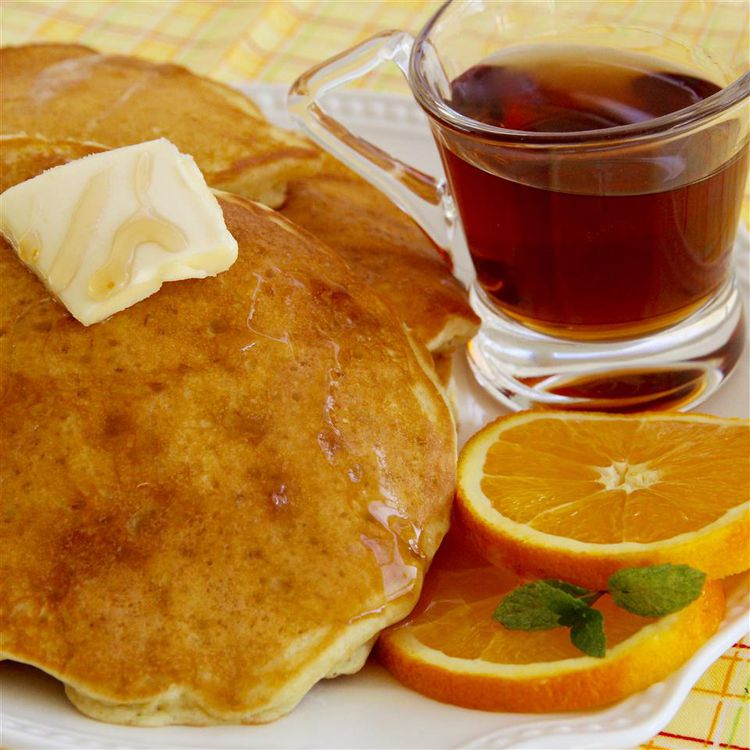

Creamsicle Pancakes
Home

Description
This is an orange and vanilla breakfast delight.
Ingredients
- 1/2 cup milk
- 1 teaspoon grated orange zest
- 1 cup all-purpose flour
- 2 tablespoons white sugar
- 1 teaspoon baking powder
- ½ teaspoon baking soda
- ¼ teaspoon salt
- 1 egg
- 2 tablespoons butter, melted
- 1 teaspoon vanilla extract
Steps
- Stir milk, orange juice, and orange zest together in a bowl. Mix flour, sugar, baking powder, baking soda, and salt together in a separate large bowl. Whisk egg, butter, and vanilla extract into the orange juice mixture. Whisk orange juice mixture into flour mixture until smooth batter forms.
- Heat a lightly oiled skillet over medium-high heat. Drop batter in 1/4-cup spoonfuls onto the griddle and cook until bubbles form and the edges are dry, 3 to 4 minutes. Flip and cook until browned on the other side, 2 to 3 minutes. Repeat with remaining batter.